Crisp Pixel Icons: 485 pixel-art RPG icons at 16 x 16
Crisp Pixel Icons is a set of 485 pixel-art fantasy RPG icons at 16 x 16: items, equipment, loot, spells, status effects and UI glyphs. That is 361 base designs plus 124 variants (116 material-tier and colour recolours such as bronze / steel / gold / crystal gear and potion colours, 5 hand-edited variants, 3 mirrored arrows). It is true pixel art: 1 px dark outline, light from the top-left, one shared 41-colour palette, no anti-aliasing.
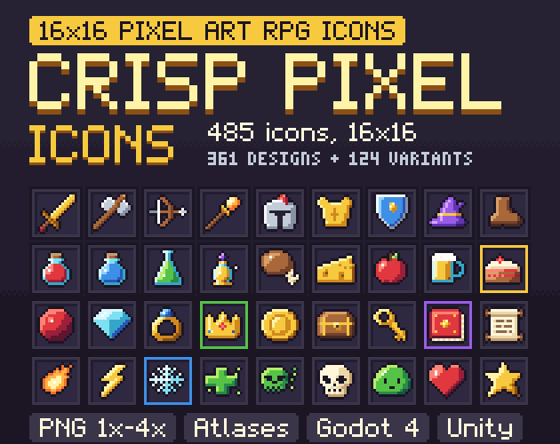
- Contents
- 485 icons at 16 x 16 in 14 categories: 361 base designs + 124 variants
- Formats
- PNG at 1x, 2x, 3x and 4x (16-64 px), grid atlases, JSON + CSV index, Godot 4 project, Unity package, palette files
- Price
- $4.99 on itch.io (anipixels.itch.io/crisp-pixel-icons)
- Free sampler
- 42 icons, free on itch.io (anipixels.itch.io/crisp-pixel-icons-free)
- Licence
- Royalty-free for commercial and non-commercial projects, no credit required, no reselling or redistribution of the files
- Made by
- Anipixels, with procedural code written with an AI assistant (Claude)
What is included
- Weapons (56) - 40 base designs: sword, broadsword, greatsword, rapier, scimitar, katana, dagger, kris, throwing knife, cleaver, hand axe, battle axe, halberd, pike, trident, lance, mace, morningstar, warhammer, club, staff orb, staff crook, wand, scythe, whip, longbow, shortbow, crossbow, arrow, quiver, throwing star, boomerang, bomb, flintlock, claws, knuckles, flail, nunchaku, harpoon, cannonball
- Armour & Shields (39) - 20 base designs: helmet, great helm, horned helmet, wizard hat, hood, feather cap, mask, chestplate, chainmail, leather tunic, robe, cape, gauntlet, boots, leggings, belt, heater, round, tower and wooden shields
- Potions & Elixirs (28) - 14 base designs: red potion, red vial, large red potion, green flask, purple bottle, love potion, poison, medicine, elixir, bubbling flask, empty vial, test tube, holy water, bandage
- Food & Drink (29) - apple, cherries, grapes, strawberry, pear, orange, watermelon, banana, drumstick, steak, sausage, cooked fish, egg, fried egg, baguette, cheese, pie, cake slice, cookie, candy, honey jar, milk bottle, ale mug, wine bottle, goblet, soup bowl, kebab, canteen, teacup
- Materials & Ores (35) - 19 base designs: copper ore, iron ingot, gold nugget, coal, stone, brick, wood log, planks, stick, leather, red cloth, thread spool, wool, rope, gear, nails, flint, clay, magic dust
- Gems & Jewellery (32) - 17 base designs: ruby, cut emerald, teardrop sapphire, diamond, crystal, pearl, amber, gem heart, trillion topaz, geode, sapphire ring, necklace, amulet, earrings, bracelet, crown, tiara
- Tools (33) - pickaxe, shovel, hoe, hammer, saw, anvil, fishing rod, bug net, sickle, watering can, bucket, torch, lantern, candle, lockpick, spyglass, compass, scissors, needle, mortar, cauldron, frying pan, broom, wrench, bell, tent, bedroll, lute, pan flute, horn, drum, balance scale, pocket watch
- Keys, Books & Quest Items (40) - 29 base designs: gold key, skeleton key, key ring, padlock, sealed scroll, open scroll, map, letter, note, red book, grimoire, open book, necro tome, quill and ink, contract, idol, crystal ball, ankh, rune stone, magic lamp, hourglass, dice, medal, trophy, banner, hand mirror, horseshoe, voodoo doll, message in a bottle
- Magic & Skills (32) - fireball, flame, meteor, explosion, ice spike, snowflake, lightning bolt, storm cloud, water splash, wave, bubbles, wind gust, tornado, rock spike, leaf spell, thorn vine, holy light, heal, revive, shadow orb, arcane star, magic circle, portal, eye spell, moon, sun, slash, claw slash, fist, multi arrow, shield spell, music note
- Status Effects (30) - 28 base designs: poisoned, burning, frozen, stunned, asleep, confused, blind, silenced, cursed, bleeding, slowed, haste, attack up, defense up, regen, invisible, fear, charm, rage, armor break, marked, rooted, petrified, lucky, doom, shocked, level up, dead
- Currency & Loot (23) - 17 base designs: gold coin, coin stack, coin pile, ancient coin, money bag, coin pouch, chest, open chest, crate, barrel, sack, backpack, gift box, gold bars, urn, strongbox, mystery box
- Nature & Farming (37) - 31 base designs: oak tree, pine tree, berry bush, red flower, sunflower, rose, red mushroom, herb bundle, leaf, acorn, pinecone, seed bag, sprout, wheat, corn, carrot, potato, tomato, pumpkin, turnip, cabbage, chili, garlic, cactus, seashell, starfish, hay bale, nest with eggs, honeycomb, butterfly, raw fish
- Monster Parts & Trophies (28) - 22 base designs: bone, skull, demon skull, fang, claw, beast horn, antler, feather, slime, eyeball, tentacle, bat wing, spider web, stinger, dragon egg, beast heart, tusk, turtle shell, venom sac, ectoplasm, beast paw, ribcage
- UI Glyphs (43) - 30 base designs: heart, star, check, cross, plus, minus, arrow up, quest mark, quest turn-in, info, home, search, speech bubble, trash, sound on, play, pause, menu, map pin, flag, clock, cursor arrow, cursor hand, eye show, pencil, refresh, exit door, power, gamepad, health orb
Details
- 1940 PNG files: 485 icons at each of 4 sizes. 16 x 16 is the drawn size.
- 361 different drawings. The other 124 are variants of those: mostly a colour ramp swapped (a gold sword, a blue potion), a few small hand edits, and the mirrored arrows. Variants are marked in the index file.
- Every pixel is fully opaque or fully transparent. 41 colours in the whole set, at most 14 in one icon.
- Drawings are up to 14 x 14 with a 1 px outline, so the largest icons fill the 16 x 16 cell edge to edge.
- Atlas cells have no padding: use nearest-neighbour (point) filtering and whole-number scales.
- Same palette, outline and light direction as the Crisp Pixel UI kit, and the icons fit its 20 px slots. They are new drawings, not the icons from that kit.
- Icons only: the slot frames in the screenshots are not part of the pack.
- Download size: CrispPixelIcons_Full.zip is 1.53 MB.
Formats and engines
- PNG at 1x, 2x, 3x and 4x (16, 32, 48 and 64 px), one file per icon, in a folder per category. The larger sizes are exact enlargements of the 16 px art, not redrawn.
- Grid atlases with 16 px and 32 px cells (plus 48 and 64), 24 columns wide, with a JSON and CSV index: name, category, cell, and whether the icon is a base design or a variant of one.
- Godot 4 project: one AtlasTexture resource per icon, a lookup script (CrispPixelIcons.tex("sword_gold")) and an icon browser scene.
- Unity package with the 16 px PNGs and the atlases as plain textures, plus the import settings to use (nothing is pre-sliced).
- Palette files (.hex and .gpl) so you can match your own art or recolour.
Works with: Any engine that loads PNG. Godot 4 (4.3 or newer; resources load-tested headless in 4.7) gets ready-made AtlasTextures; Unity (plain PNG textures, no prefabs and no pre-set slicing), GameMaker, RPG Maker-style tools, Phaser and others use the single PNGs or slice the atlas on a 16 or 32 px grid.
Free sampler
The free sampler has 42 of the 485 icons as PNG at 1x, 2x, 3x and 4x, with an icons.json of names and categories. The 16 px PNGs of those 42 icons are shown here, enlarged 3x with no smoothing.
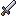
sword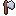
hand axe- longbow
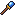
staff orb- helmet
- chestplate
- shield heater
- boots
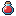
potion red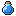
potion blue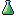
flask green- apple
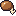
drumstick- cheese
- ore copper
- ingot iron
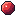
gem ruby- diamond
- ring sapphire
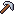
pickaxe- torch
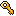
key gold- book red
- scroll open
- map
- fireball
- lightning bolt
- heal
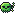
poisoned- asleep
- coin gold
- chest
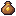
money bag- oak tree
- mushroom red
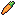
carrot- skull
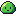
slime- heart
- star
- check
- cross
The free itch.io page also hosts the icon browser of the full pack: all 485 icons, searchable by name, filtered by category, on a dark or light background.
Licence
Use the graphics in any number of commercial or non-commercial projects (games, apps, websites, videos, streams, game jams). Edit, recolour, resize or otherwise modify them. Credit is appreciated but never required. You may not resell, redistribute or give away the graphics themselves, on their own or as part of another asset pack, icon set, UI kit or template, modified or not, and you may not claim them as your own original work in an asset pack.
This is a summary of the LICENSE.txt inside the download. The sampler's copy of that file: crisp-pixel-icons.txt.
Questions
Are these 32x32 icons?
No. They are drawn at 16 x 16. The 32 px files and the 32 px atlas are the same pixels doubled, for engines and layouts that want 32 px cells.
How many are really different?
361 drawings. The other 124 are variants of those: mostly a colour ramp swapped (a gold sword, a blue potion), a few small hand edits, and the mirrored arrows.
Which engines does it work with?
Any engine that loads PNG. Godot 4 gets ready-made AtlasTextures; Unity, GameMaker, RPG Maker-style tools, Phaser and others use the single PNGs or slice the atlas on a 16 or 32 px grid.
Do they match Crisp Pixel?
Yes: same palette, outline and light direction as the Crisp Pixel UI kit, and they fit its 20 px slots. These are new drawings, not the icons from that kit.
Can I recolour them?
Yes. The palette is small and fixed, so a palette swap is easy.
Is there a free version?
Yes: Crisp Pixel Icons Free has 42 icons to test in your project.
Can I use it in a commercial game, and do I have to give credit?
It is royalty-free for commercial and non-commercial projects and no attribution is needed. You may not resell or redistribute the icons themselves, modified or not.
Was AI used to make it?
Yes. Claude (an AI assistant) designed everything in this pack: every icon is written out pixel by pixel as code (rows of palette characters). No AI image generators, no traced or third-party art.
Screenshots


How it was made
Claude (an AI assistant) designed everything in this pack: every icon is written out pixel by pixel as code (rows of palette characters). No AI image generators, no traced or third-party art.
Crisp Pixel Icons is part of the Crisp Everything Bundle: all 15 Crisp packs for $19.99 instead of $86.85 bought one by one. View the bundle on itch.io